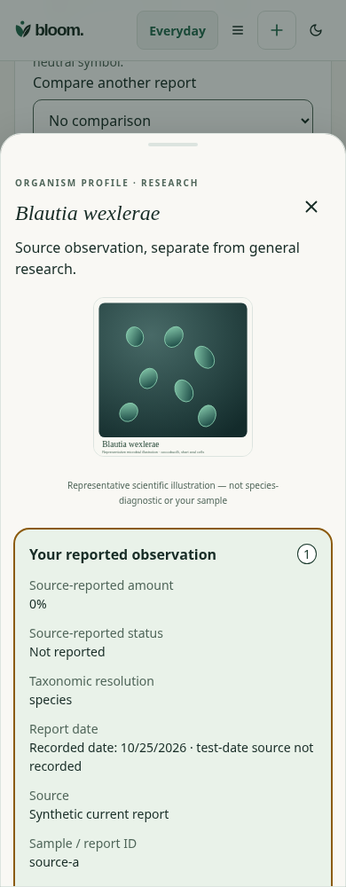
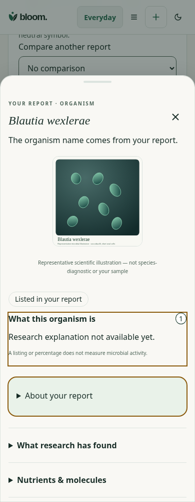

Synthetic source fixture, same organism and 390×1000 light viewport. Before source:67f66db. Independent Design and physical VoiceOver acceptance remain pending.


Names, original amounts, zero/unknown values, representative artwork and source facts are preserved. This change adds no reviewed research claim or personal function inference.